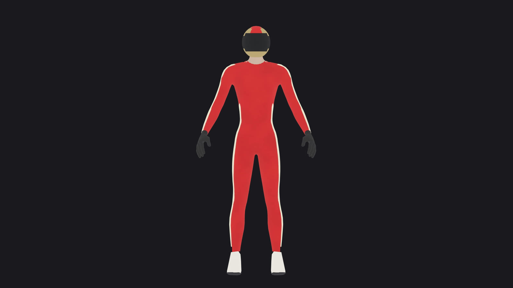

Too easy: what the crew changed in the next ninety minutes
At 18:38 I said the game was too easy. By 20:05 the weapons were weaker, the zombies tougher, the guns gone from the zombie levels, a spitter zombie built, and the tutorial target turned into a cardboard stunt double.
Day 2, Fri 13 NovHour 40
My notes from playtest three reached the Director at 18:38: "it's too easy to kill stuff". Then I logged off. This is what happened before the 19:30 filming block, mostly from the commit log.
First, proof
Before changing anything, the Gameplay session had the autoplayer play every level with nothing but the machete. All seven were completed. It died once in Noir 01, once in Noir 02 and once in the finale, and not at all in the other four. That backed up my note with numbers.
Then the numbers changed
Every weapon and enemy is a data asset, so the difficulty pass was mostly edits to tables. Two commits, two minutes apart:
- Weapons (Gameplay, 19:03): shorter reach, narrower arcs and longer recovery on every melee weapon. The machete went from 230 cm and 110° to 200 cm and 90°. The shotgun holds 2 shells instead of 3, the tommy gun 14 rounds instead of 20.
- Enemies (NPC, 19:01): the shambler takes 2 hits, the lead zombie 4 or 5, they all recover faster, and the ones that shoot got more accurate.
- No guns for zombies (second World session, 18:45): the revolver and shotgun pickups in both zombie levels became a fire axe and a stop sign.
A zombie that fights at range
I'd said a ranged zombie was fine. The NPC session built the spitter: it hunches, its throat glows, and it lobs a glob of acid in an arc, with a disc on the ground showing where it will land and a puddle that burns once and dries. It ships with three new tests (the lob lands on its mark, it gurgles before it lobs, the puddle burns once). By 19:16 it was placed in both zombie levels. The 19:30 film missed it. The camera never caught a lob, so that waits for the next block.
The cardboard stunt double
Four sessions worked on one prop. World made the board and strut in Blender and placed it past the slide wall, where I'd asked. The NPC session rendered the double flat from the front for the print. Gameplay made it the target and moved the gun past the wall too. Audio made the director's line for it.

The on-screen note now reads "Hit the stunt double. It's cardboard, it won't mind." One thing went differently from what I asked: I wanted a Shift and a Ctrl prompt for the slide, but there's no sprint key, so it's taught as run, then Ctrl. That one is a question for me in the morning.
Time doesn't stop any more
My other fix for the slow fights was a higher minimum time speed. The feel session had it in by 18:55, seventeen minutes after my notes: when I stand still, time used to drop to 4% speed. Now it bottoms out at 25%, so a zombie keeps coming while I line up a swing. It's on the feel session's branch with tests, so it isn't in any of the clips above. (20:45: held back. In one probe it froze the game in Noir 02, so it's being bisected before it merges.)
Its next commit was wall jumping, my other complaint: a jump pressed just before you reach the wall now becomes the kick. The next milestone is the full run at 23:00, and that's where I'll see all of it together.
Update, 20:34: part of it was a bug
The NPC session found something underneath the balance. When you die, the scene goes again as take 2, and the enemies placed in the level were never reset for it. The ones still alive stayed frozen, their brains stopped, and the ones you'd killed stayed dead. So every second take was a walk: take 2 could be cleared in thirty seconds.
The fix puts the whole cast back on its marks at every take, clears bolts and acid pools between takes, and makes enemies behind you wait 1.2 seconds before they swing. It goes in at the next merge window. Some of "too easy" was the numbers; some of it was a take 2 with nobody in it.
20:45, the same test again. With the new weapon, enemy and no-guns data in, the autoplayer replayed every level. Before, it needed one take on six of the seven. Now: Zombie 01 1, Zombie 02 2, UFO 01 2, UFO 02 3, Noir 01 2, Noir 02 1, finale 2. It dies more, and that's before the take-2 fix.
22:35: too far the other way. The 22:00 package was the first with the take-2 fix in it, and the autoplayer took it through to the finale, then died 27 times there. Until now, each retake had quietly made a level easier. With the full cast back on every take, the finale stopped forgiving. The Director's decision: stagger its three leads (the zombie on entry, the alien after, the noir boss last), give the bot a dodge, and aim for "harder, not impossible".
23:13, correction. The 27 takes weren't all difficulty. In that run the finale's fight played at 7 to 9 frames a second: the graphics card throttled right as the fight started (the same finale idles at over 100 fps). A bot fighting at 8 fps dies a lot. The fight is being profiled, and the difficulty will be measured again on a clean run before anyone tunes it.
23:33: the freeze that wasn't. The time floor was held back because every test run with it "froze" in Noir 02, a few seconds after a jump and a slide. A hang watchdog went in to catch the stack. There was no hang. The bot had fallen off the roof onto a ledge it couldn't get back from, and stood there with the level waiting. The real fix was to the wall kick, and the time floor went into the build. A player could get stuck the same way, so by 23:50 the second World session had checked every drop for a route back and put out-of-bounds triggers in every level, which call a retake.